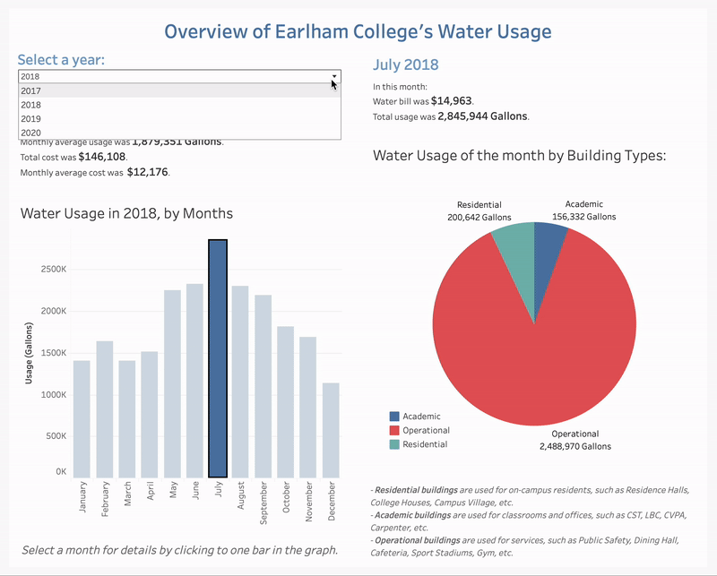

Welcome to my portfolio
This is my first interactive design experience with the Environmental Sustainability department at Earlham College, where I developed Tableau dashboards to visualize and analyze our college’s resource usage data. Explore the project further here!
Also known as my most challenging undergraduate work, I explored the potentials of AI in drug development research and attempted to make it less "math-y" to a broader audience. Below is my simplified demo video of the topic. Explore the project further here!
Who needs Instagram when we've got … Parstagram. This was one of my projects in CodePath's iOS App Development course. As a copycat of Instagram, it has basic functionality where users can sign up, sign in, post pictures, and comment. Explore the project further here!
Committed to learning more about robotics, I joined my first Hardware Hackathon at the University of Maryland. During two intensive days, I learned about Arduino and hardware design from scratch to help our team of three (with Khai and Brian) build a robotic arm. Even though the robotics arm could only pick up trash at the moment, we were determined to upgrade this for medical surgery, so feel free to leave suggestions in our demo video below. Explore the project further here!